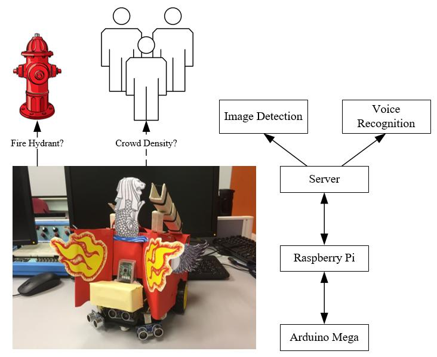
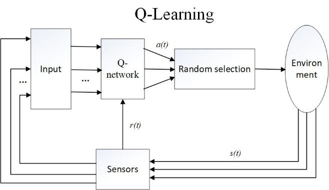
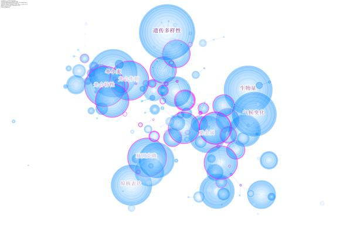
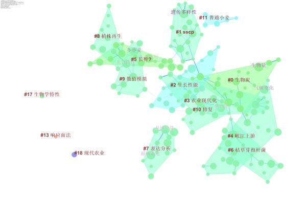

Welcome to XIN's homepage
Cen XIN
Department of Computer Science
College of Informatics
Huazhong Agricultural University
College of Informatics
Huazhong Agricultural University
Location: Shizishan No.1 St. Hongshan Dist. Wuhan, Hubei, China
Post code: 430070
E-mail: xincen'at'webmail.hzau.edu.cn
-
Research Interests
- Internet of things
- Intelligent control algorithms
- Machine learning
- Natural language processing
- Text mining
-
Research Experiences
-
Tele-Robotic Deep Learning (Jul. 2018 - Aug. 2018)
Supervisor: Prof. Colin TAN & Prof. SOO Yuen Jien, Dept. of Computer Science, School of Computing, National University of Singapore

The robot is called Hermes, which is a fire emergency robot as is shown on the image.
While working, it has two models, one of which is driving by voice when searching the fire, the other of which is autonomous driving when reaching the fire place.
In driving by voice, our team use voice recognition techniques, ensuring the robot can be used only by certain persons.
Also, some simple instructions like "move on", "move back", "turn left", and "turn right" can be recognized to drive the car.
In autonomous driving, we use deep learning to process the pictures taken by the camera on the robot.
It can be recognized whether there is a fire hydrant in view. If the answer is yes, then it will calculate its position then drive to the destination autonomously.
In addition, the real-time crowd density can also be shown to the users while driving.
A part of the source code is available on GitHub: Hermes
-
Intelligent control system on a biochemical reactor (Nov. 2017 - ) (pending now)
Supervisor: A. Prof. Jian-yong WANG, Dept. of Computer Science, College of Informatics, Huazhong Agricultural University

We first build a system using IoT techniques, in which the server receives the data collecting by sensors and then send instructions to control cerain kinds of devices.
Our team are now engaged in designing the intelligent control algorithm with an aim to autonomously keep the balance in the reator.
As is shown on the image above, we are intended to use Q-learning as the basic framework of our algorithm.
Since it is seen as confidential project by the Key Lab, disclosing any details are not allowed.
But the source code of the IoT system is still available on GitHub: EnvDataCollector
-
Poker detection (Aug. 2017)
Supervisor: Prof. Hamed Sari-Sarraf, Dept. of Electrical and Computer, Texas Tech University
This is a crash program on how to use original DIP techniques to recognize the number and the color of a poker card.
Basic knowledge on calculus and MATLAB programming are required.
-
Construction and analysis of knowledge graphs (Nov. 2016 - May. 2018)
Supervisor: A. Prof. Zhi LI, Dept. of Mathematics and Statistics, College of Science, Huazhong Agricultural University
Supported by Students Research Foundation (SRF) of Huazhong Agricultural University


In this project, we mainly concerned about the structure of the knowledge graph and the potential information behind it.
With 28126 papers from 10 Chinese journals whose compound impact factors ranked top 10 on CNKI as samples, we used CiteSpace as a visualization tool to build the knowledge graphs, then analyzed the static structure and the dynamic changes on it.
The main issue is how to choose the pruning algorithm and the part to be pruned, which are offered by CiteSpace, so as to make the knowledge graph more clear and more easily understood.
-
Work Experiences
- Form teacher assistant (Sept. 2017 - Aug. 2018)
-
Education Backgrounds
-
Bachelor: Huazhong Agricultual University, Sept. 2015 - Jun. 2019 (Predicted)
GPA: 3.69/4.00 (up to the Academic Year 2017/2018 Semester 2)
-
Awards
- 3rd Prize (Team), Application Developing Contest for Campus Life of Huazhong Agricultural University, 2017
- 2nd Prize, Professional Skill Contest of Information and Computing Sciences, 2017
- 2nd Prize, 5th Programming Contest of Huazhong Agricultural University, 2017
- 1st Prize, Programming Contest for Freshmen & Invitational Programming Contest of Universities in Wuhan, 2016
-
Publications
Last updated on Sept. 18 2018